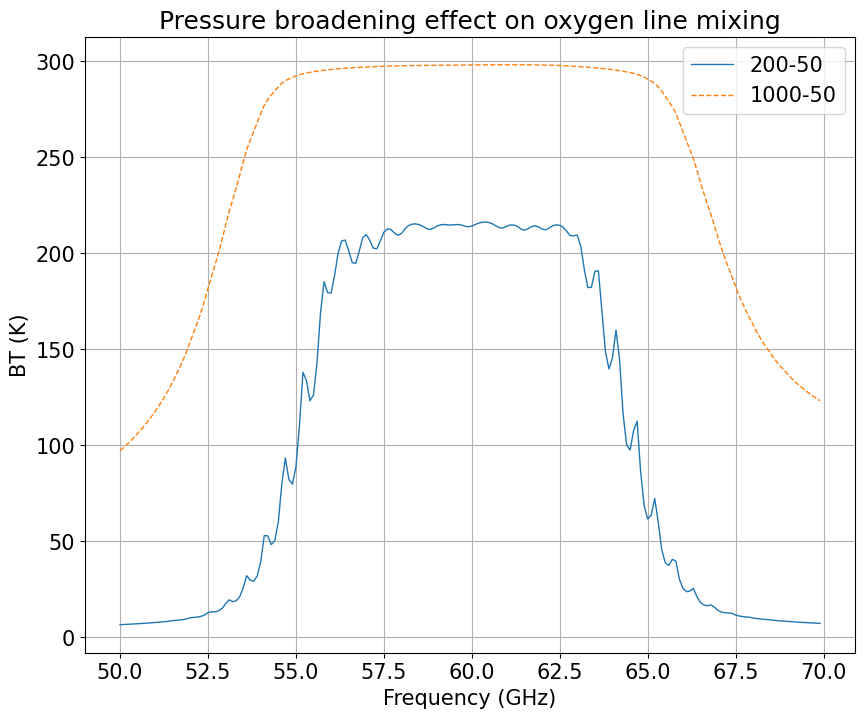
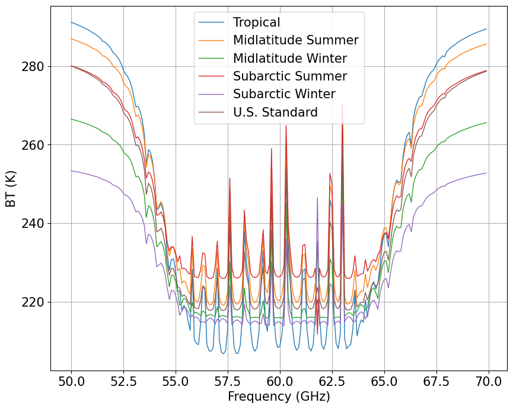

Example by Loretta-Pearl-Poku#
This notebook example was created by Loretta-Pearl-Poku
The code highlights the fluctuations in the downwelling brightness temperature at high resolution and high pressure levels explaining the broadening effect of oxygen line mixing. Also the fluctuations in the downwelling brightness temperature in the V-band (50 - 70 GHz) at high resolution.
[2]:
import matplotlib.pyplot as plt
import datetime
import numpy as np
plt.rcParams.update({'font.size': 15})
from pyrtlib.climatology import AtmosphericProfiles as atmp
from pyrtlib.tb_spectrum import TbCloudRTE
from pyrtlib.utils import ppmv2gkg, mr2rh
from pyrtlib.apiwebservices import WyomingUpperAir
from pyrtlib.utils import import_lineshape
from pyrtlib.absorption_model import H2OAbsModel
/usr/local/lib/python3.10/dist-packages/pyrtlib/apiwebservices/erafive.py:19: UserWarning: Module CDSAPI must be installed to download ERA5 Reanalysis dataset.
warnings.warn(
[7]:
date = datetime.datetime(2023, 6, 12, 12)
station = 'DIAP' #Abidgan
df = WyomingUpperAir.request_data(date, station)
df.attrs['units']
[7]:
{'pressure': 'hPa',
'height': 'meter',
'temperature': 'degC',
'dewpoint': 'degC',
'rh': '%',
'mixr': 'g/kg',
'station': None,
'station_number': None,
'time': None,
'latitude': 'degrees',
'longitude': 'degrees',
'elevation': 'meter'}
[16]:
#WyomingUpperAir.get_stations(region = 'africa')
date = datetime.datetime(2023, 6, 12, 12)
station = 'DIAP' #Abidgan
df = WyomingUpperAir.request_data(date, station)
df.attrs['units']
fig, ax = plt.subplots(1, 1, figsize=(12, 8))
mdl = 'R17'
ang = np.array([90.])
frq = np.arange(50, 70, 0.1)
nf = len(frq)
ax.set_xlabel('Frequency (GHz)')
ax.set_ylabel('BT (K)')
pressure = df.pressure.values[42:65]
rh = df.rh.values[42:65]/100
height = df.height.values[42:65]/1000
temp = df.temperature.values[42:65]+273
'''
pressure = df.pressure.values
rh = df.rh.values/100
height = df.height.values/1000
temp = df.temperature.values+273
'''
rte1 = TbCloudRTE(df.height.values/1000, df.pressure.values, df.temperature.values+273, df.rh.values/100, frq, ang)
rte1.satellite = False
rte1.init_absmdl(mdl)
rte = TbCloudRTE(height, pressure, temp, rh, frq, ang)
rte.satellite = False
rte.init_absmdl(mdl)
df1 = rte1.execute()
df = rte.execute()
df = df.set_index(frq)
df1 = df1.set_index(frq)
df.tbtotal.plot(ax=ax, linewidth=1,label=('200-50'))
df1.tbtotal.plot(ax=ax,linewidth=1,label=('1000-50'),linestyle='--')
ax.grid(True, 'both')
ax.legend()
ax.set_title('Pressure broadening effect on oxygen line mixing')
ax.set_box_aspect(0.8)
plt.show()
/usr/local/lib/python3.10/dist-packages/pyrtlib/tb_spectrum.py:82: UserWarning: Number of levels too low (65) or minimum pressure value lower than 10 hPa (50.0). Please considering profile extrapolation. Levels number must be higher than 25 and pressure value lower than 10 hPa
warnings.warn(f"Number of levels too low ({len(self.p)}) or "
/usr/local/lib/python3.10/dist-packages/pyrtlib/tb_spectrum.py:82: UserWarning: Number of levels too low (23) or minimum pressure value lower than 10 hPa (50.0). Please considering profile extrapolation. Levels number must be higher than 25 and pressure value lower than 10 hPa
warnings.warn(f"Number of levels too low ({len(self.p)}) or "

[11]:
atm = ['Tropical',
'Midlatitude Summer',
'Midlatitude Winter',
'Subarctic Summer',
'Subarctic Winter',
'U.S. Standard']
fig, ax = plt.subplots(1, 1, figsize=(12, 8))
for i in range(0, 6):
z, p, d, t, md = atmp.gl_atm(i)
gkg = ppmv2gkg(md[:, atmp.H2O], atmp.H2O)
rh = mr2rh(p, t, gkg)[0] / 100
mdl = 'R19SD'
ang = np.array([90.])
frq = np.arange(50, 70, 0.1)
nf = len(frq)
ax.set_xlabel('Frequency (GHz)')
ax.set_ylabel('BT (K)')
rte = TbCloudRTE(z, p, t, rh, frq, ang)
rte.init_absmdl(mdl)
df = rte.execute()
df = df.set_index(frq)
df.tbtotal.plot(ax=ax, linewidth=1, label='{}'.format(atm[i]))
ax.grid(True, 'both')
ax.legend()
ax.set_title('Upwelling Brightness Temperature calculation from 50 to 70 GHz')
ax.set_box_aspect(0.8)
plt.show()
